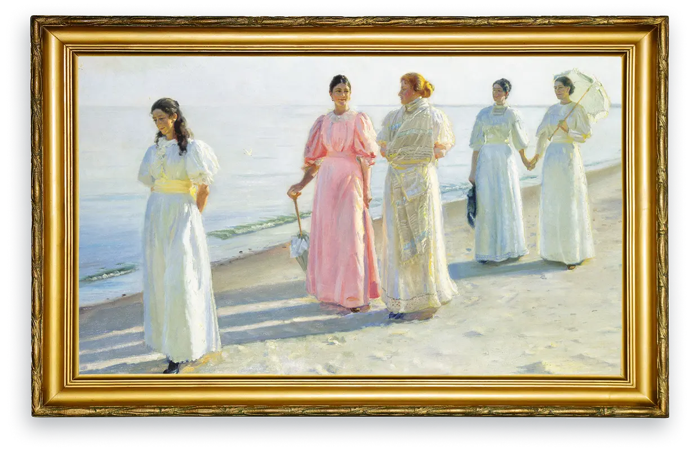

Udvalgte værker

Rhododendron i Dagminnes have. Skagen
Af Laurits Tuxen

En strandpromenade
Af Micheal Ancher

Sommeraften ved Skagen
Af P.S.Krøyer
Sommeraften ved Skagen
Af P.S.Krøyer
Sommeraften ved Skagen
Af P.S.Krøyer